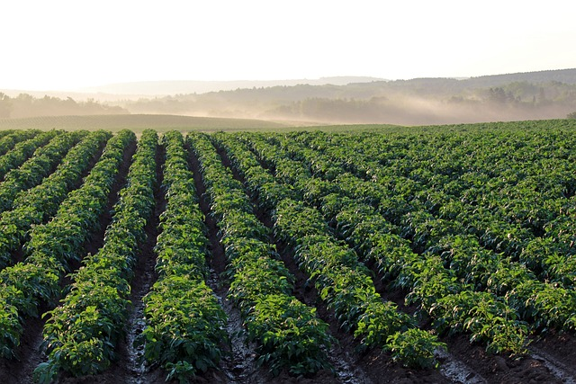
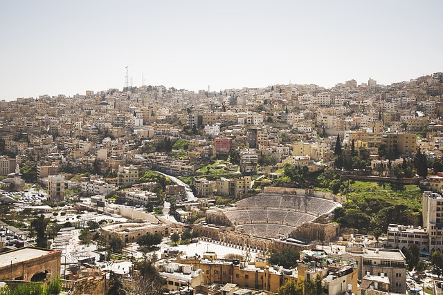
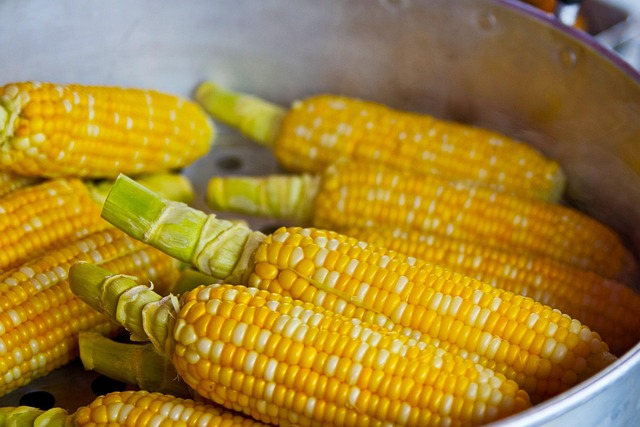

A relação entre o campo e a cidade é fundamental para a formação da sociedade moderna. Este site explora como as duas realidades se conectam e influenciam mutuamente, desde a história até os desafios futuros.O campo, ou zona rural, caracteriza-se pela predominância de atividades agrícolas e pecuárias, um ritmo de vida mais calmo e uma maior conexão com a natureza. A cidade, ou zona urbana, é caracterizada pela alta densidade populacional, diversidade de atividades econômicas (comércio, indústria, serviços), e um ritmo de vida mais acelerado. Elaboração: Campo: O campo é o espaço rural, onde as atividades econômicas são principalmente agrícolas, como a produção de alimentos, e pecuárias, como a criação de animais. A vida no campo é geralmente mais lenta e o ritmo de trabalho mais ligado às estações do ano. A natureza é um elemento central na vida rural, com paisagens ricas em vegetação e animais. Cidade: A cidade é o espaço urbano, um local com alta concentração de pessoas e construções, onde as atividades econômicas são mais diversificadas, com destaque para o comércio, a indústria e os serviços. O ritmo de vida na cidade é geralmente mais acelerado, com mais opções de entretenimento e uma maior oferta de serviços.
 Desde os primórdios das civilizações, o campo e a cidade têm se interconectado, seja por meio de trocas comerciais ou pela migração de populações...A relação entre campo e cidade é um conceito essencial na história e geografia, marcando uma dinâmica de interdependência e transformação ao longo do tempo. A conexão entre esses dois espaços, que se manifesta na produção e consumo de bens, fluxo de pessoas e investimentos, é um reflexo do desenvolvimento das sociedades. História da Conexão: Origens: A história da conexão entre campo e cidade remonta aos primórdios da agricultura e ao surgimento das primeiras cidades. As comunidades rurais, que inicialmente dependiam da agricultura e pecuária para sobreviver, evoluíram, levando a um crescimento populacional e à formação de centros urbanos. Interdependência: Com o desenvolvimento das cidades, a relação entre elas e as áreas rurais se tornou mais complexa e dinâmica. As cidades, por sua vez, forneceram um mercado consumidor para os produtos agrícolas do campo e, ao mesmo tempo, ofereciam oportunidades de emprego e acesso a serviços e tecnologias. Êxodo Rural: Nos séculos XIX e XX, houve um grande fluxo de pessoas do campo para as cidades, conhecido como êxodo rural. Esse movimento foi impulsionado pela industrialização, que gerou oportunidades de trabalho nas fábricas urbanas, e pela crescente mecanização da agricultura, que reduziu a demanda por mão de obra rural. Impactos da Industrialização e Tecnologias: A industrialização e os avanços tecnológicos trouxeram novas dinâmicas à relação entre campo e cidade. A produção industrial, a mecanização da agricultura e a expansão da rede de transporte e comunicação transformaram a maneira como o campo e a cidade interagem. Relação Atual: Atualmente, a relação entre campo e cidade é complexa e dinâmica, com a cidade dependendo do campo para o fornecimento de alimentos e matéria-prima, e o campo dependendo da cidade para o acesso a tecnologias, serviços e mercado. Principais Aspectos da Conexão: Produção e Consumo: A relação entre campo e cidade se manifesta na produção de alimentos e matérias-primas no campo, que são consumidos na cidade, e na produção de produtos manufaturados e serviços na cidade, que são utilizados no campo. Fluxo de Pessoas: A migração do campo para a cidade e o movimento de pessoas entre os dois espaços são elementos importantes da conexão, impulsionados pela busca de trabalho e oportunidades. Investimentos: Os investimentos em infraestrutura, tecnologia e serviços, tanto no campo quanto na cidade, são essenciais para o desenvolvimento da relação entre eles. Comércio e Intercâmbio: O comércio e o intercâmbio de produtos e serviços entre o campo e a cidade são fundamentais para o funcionamento da sociedade. Conclusão: A conexão entre campo e cidade é um fenômeno complexo e multifacetado, que se manifesta na história, na geografia e na economia das sociedades. A interdependência entre esses dois espaços, a produção e o consumo de bens, o fluxo de pessoas e a evolução das tecnologias e da economia têm moldado as relações sociais e a dinâmica das sociedades ao longo do tempo.
A economia das cidades depende fortemente da produção rural. Produtos como alimentos, matérias-primas e outros bens são essenciais para o funcionamento das áreas urbanas...
A urbanização tem gerado tanto benefícios quanto desafios, como a escassez de recursos no campo e o crescimento desordenado das cidades...
O uso de novas tecnologias no campo, como drones e inteligência artificial, está revolucionando a produção agrícola, enquanto as cidades se tornam mais sustentáveis...
A cultura do campo, com suas festas populares e gastronomia, influencia diretamente a vida nas cidades, trazendo um pedacinho do rural para o urbano...
